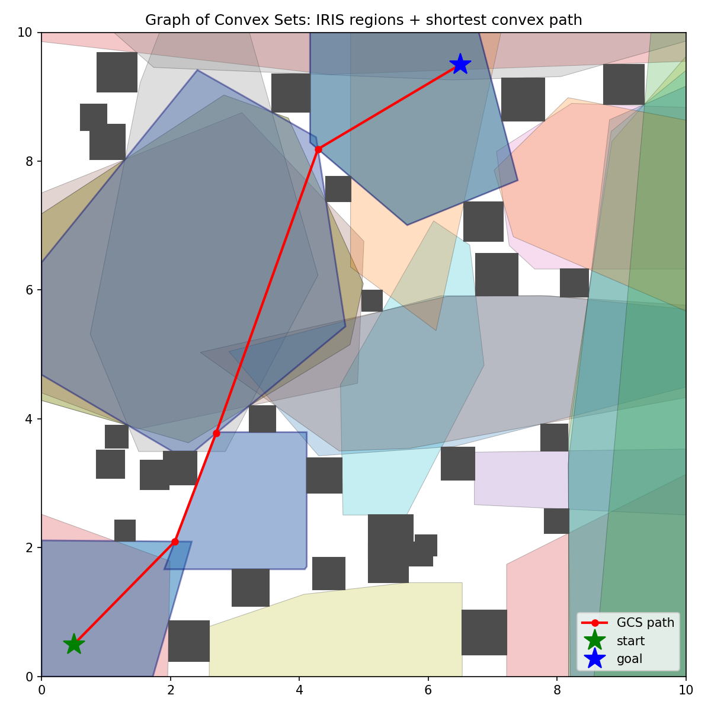
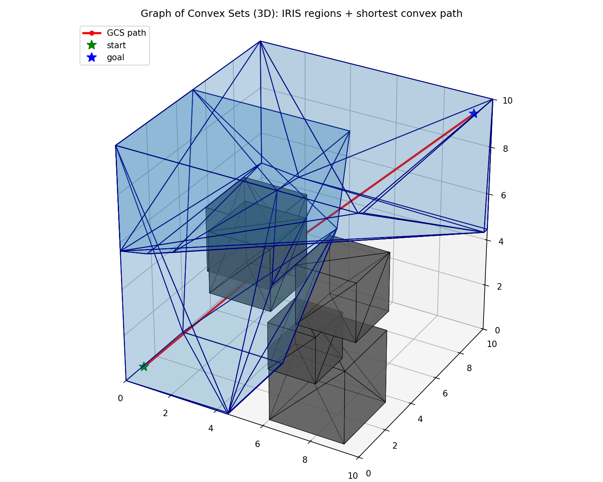

Graph of Convex Sets: A Visual Guide
Deconstructing the beautiful math behind modern motion planning.
Introduction
Path planning for robots usually suffers from a harsh trade-off: you can either use a discrete graph search (like A* on a grid) which is fast but results in jagged, unnatural paths, or you can use continuous trajectory optimization which produces smooth, elegant paths but often gets trapped in local minimums (e.g., getting stuck behind an obstacle).
The Graph of Convex Sets (GCS) algorithm, combined with IRIS (Iterative Regional Inflation by Semidefinite programming), offers a brilliant solution. It bridges the gap by turning empty physical space into a network of overlapping, mathematically guaranteed "safe rooms". By framing the problem this way, we can use a fast discrete search to pick the sequence of rooms, and a rock-solid convex optimization to pull the path tight through those rooms. Let's break down exactly how the math makes this happen.


Phase 1: Growing Regions with IRIS
Before we can navigate, we need to know where it is safe to go. Instead of looking at obstacles, IRIS looks at empty space. It picks a random seed point in the free space and inflates the largest possible convex polygon (a "room") that doesn't hit any obstacles.
To do this, it relies on an inscribed ellipse. Think of it as blowing up a balloon inside a box full of thumbtacks. We need to figure out which thumbtack the balloon will touch first, and place a mathematical "wall" in front of it.
The Convex Combination
To find the closest point on an obstacle, we don't search grid coordinates. Instead, we represent any point inside an obstacle as a convex combination—a weighted average of its corners.
By forcing the weights ($\lambda$) to be positive and sum exactly to $1$ ($\sum \lambda_i = 1$), the solver can smoothly slide these weights around to move the point $x$ anywhere inside the shape. Play with the weights below to see how adjusting the "gravity" of each corner moves the resulting point.
Warped Space (Mahalanobis Distance)
When searching for that closest point on the obstacle, IRIS doesn't use standard straight-line distance. It uses a distance metric proportional to the shape of the growing ellipse.
Here, $d$ is the center of the ellipse, and $C$ is the matrix defining its stretch. Multiplying by $C^{-1}$ acts as a mathematical "teleporter." It squishes the entire universe so that your stretched, skewed ellipse becomes a perfect, round unit circle. In this warped space, finding the tangent wall against the obstacle becomes trivial.
In the widget below, change the ellipse's shape. Notice how the normal vector (the red arrow defining the separating wall) shifts. The wall doesn't just point at the obstacle; it points in the direction where the ellipse will collide first.
Maximum Volume Ellipse
Once we place walls against the closest obstacles, we form a closed "room" (a polytope defined by $Ax \le b$). Now we ask the optimizer to inflate a new, even larger ellipse inside that room to find the next set of walls.
This single constraint ensures the balloon never pops. It calculates the position of the center ($a_i^T d$) and adds the exact length of the ellipse's "bulge" pushing toward that specific wall ($\|C a_i\|$). As long as that sum is less than the wall's distance ($b_i$), the ellipse is safe.
Phase 2: Graph Extraction
After running IRIS from multiple seed points, we have a map covered in overlapping convex safe rooms. Now we transition from continuous geometry to discrete math. We build a Graph (like a subway map) where every room is a node. If two rooms physically overlap, we draw an edge connecting them.
Using a standard algorithm like Dijkstra's or A*, we can instantly find the shortest sequence of rooms from our Start position to our Goal.
Phase 3: Trajectory Optimization
We have our sequence of rooms, but how do we find the exact footsteps? If we pass through 3 rooms, we must cross through 2 doors (the overlapping intersections). The algorithm creates a CVXPY variable for every transition waypoint.
We ask the solver to minimize the total straight-line distance of the path. However, we strictly constrain Waypoint 1 to stay inside Door 1, and Waypoint 2 to stay inside Door 2. The solver effectively treats the path like a rubber band and pulls it as tight as geometrically possible through the constrained doorways.
Drag the waypoints below to try and find the shortest path manually, or click the button to let the algorithm mathematically "pull the string tight".
Conclusion
The magic of the Graph of Convex Sets is how it segregates the difficulty of path planning. The discrete combinatorial problem (which way around the tree do I go?) is handled by blazing-fast graph searches. The continuous geometric problem (how close to the tree should I step?) is solved by robust, guarantee-backed convex optimization.
By using the warped space of Mahalanobis distance to grow maximal regions, and the rubber-band tightness of Second-Order Cone Programs to refine the trajectory, GCS guarantees absolute collision avoidance while generating beautifully smooth paths.